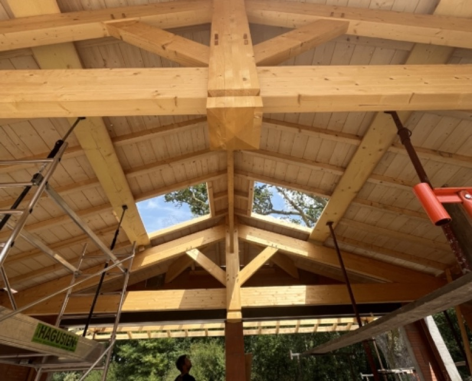
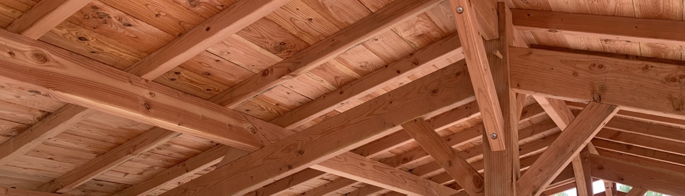
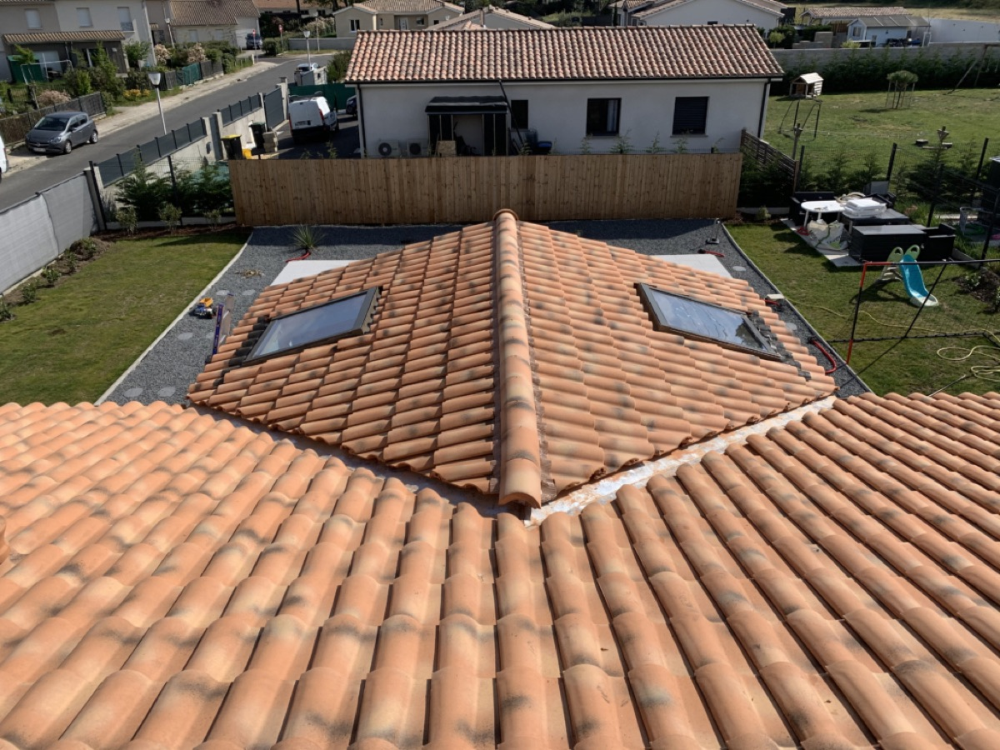
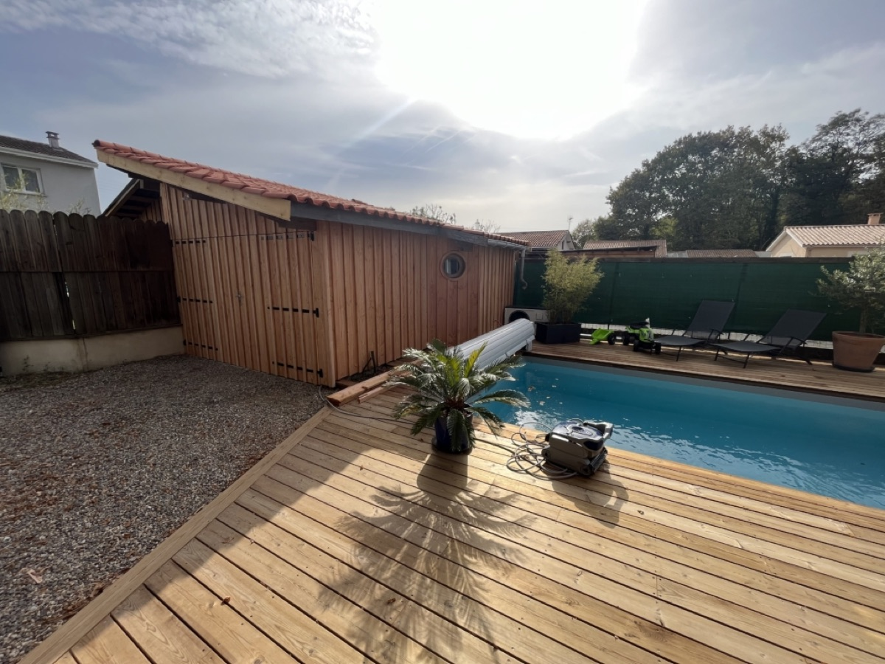
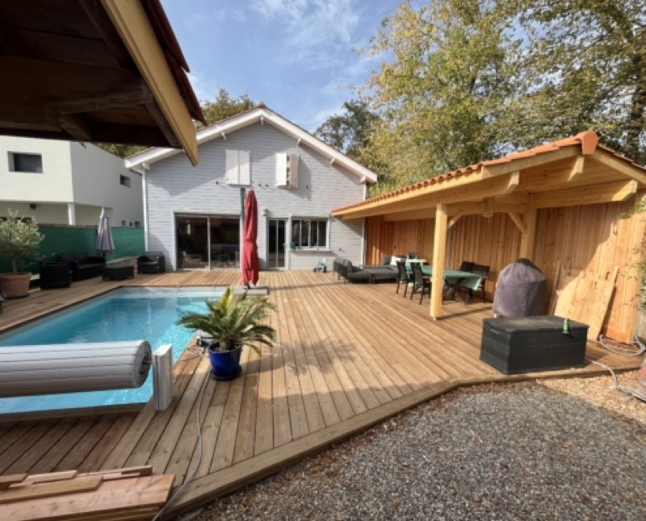
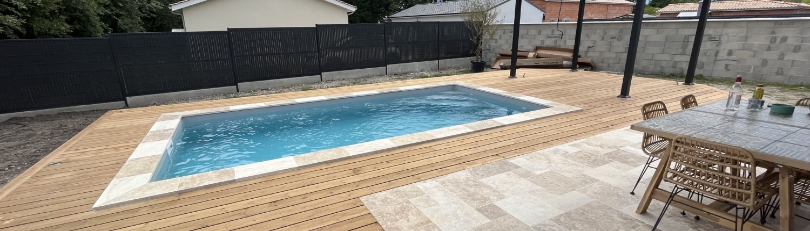
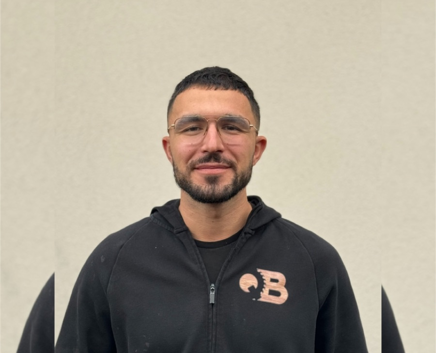
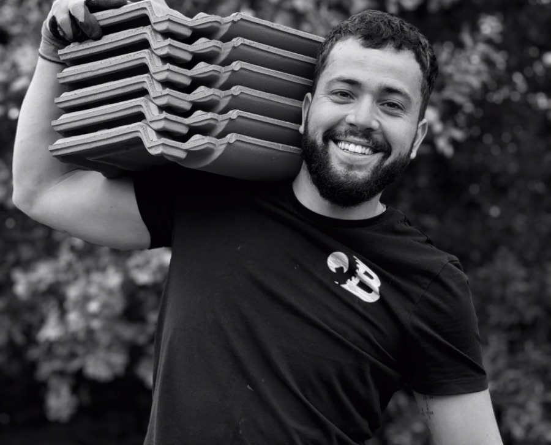
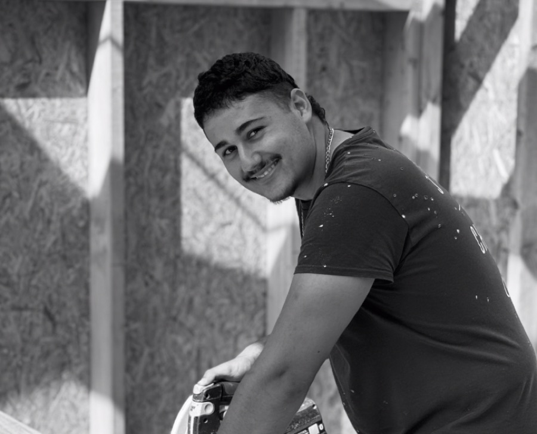

Charpente
Charpentes traditionnelles et industrielles, en neuf comme en rénovation. De l'étude à la pose, avec des bois choisis pour durer.
En savoir plus
Artisans à Cestas, près de Bordeaux
Entreprise artisanale depuis 2018, Qualibois 33 intervient en neuf comme en rénovation pour les particuliers de Gironde : charpente, couverture, zinguerie, gouttières en aluminium, avant-toits, maisons à ossature bois et aménagements extérieurs.

L'entreprise
Qualibois 33 est une entreprise artisanale de charpente, couverture et construction bois installée à Cestas, au sud-ouest de Bordeaux. Elle est dirigée par Yoan, charpentier de formation, trois CAP et un brevet professionnel en poche et plus de dix ans de métier.
Chaque projet commence par une visite sur place et un diagnostic. Nous vous proposons ensuite une solution adaptée à votre maison et à votre budget, puis notre équipe réalise les travaux, de la charpente à la zinguerie, avec un seul interlocuteur du début à la fin.
Notre savoir-faire
Faites défiler pour assembler la charpente
Nos métiers
De la charpente à la gouttière, de la maison à ossature bois à la terrasse : Qualibois 33 réalise vos travaux en neuf comme en rénovation, avec les mêmes artisans du début à la fin.

Charpentes traditionnelles et industrielles, en neuf comme en rénovation. De l'étude à la pose, avec des bois choisis pour durer.
En savoir plus
Pose et rénovation de toitures en tuiles, toitures plates en membrane EPDM, isolation et fenêtres de toit.
En savoir plus
Gouttières, chéneaux et abergements de cheminée en zinc, fabriqués sur mesure. Réparation et soudure en cas de fuite.
En savoir plus
Construction de maisons à ossature bois, mais aussi extensions, abris et pool houses, conçus et fabriqués sur mesure.
En savoir plus
Terrasses basses ou sur pilotis, terrasses de piscine, pergolas, cabanons de jardin et locaux techniques en bois.
En savoir plus
Rénovation de vos avant-toits : lambris en sous-face et bandeaux de rive, en PVC ou en bois.
En savoir plus
Gouttières en aluminium profilées sur place par notre camion atelier, en une seule longueur et sans soudure. Plusieurs coloris.
En savoir plusCharpente, toiture, terrasse ou gouttières : on se déplace pour voir votre chantier et on vous remet un devis détaillé, gratuitement.
Devis gratuit 06 66 71 36 07Réalisations
Un aperçu de notre travail chez des particuliers autour de Cestas et de Bordeaux.

Avis clients
« Nous avons fait intervenir Mr Bonneteau il y a à peu près deux ans pour la charpente et couverture de notre poolhouse. Le travail a été parfaitement réalisé et avec des tarifs très raisonnables. Le contact est également excellent. Bref je recommande à 100 % cet artisan. »
Julien L. · Google, il y a 8 mois« Nous avons fait travaillé Yoan 2 fois en quelques mois (pose d'un Velux et changement des sous-toits / planches de rives). Travail très soigné, rien à redire. De plus, toujours ponctuel, c'est vraiment un artisan que je recommande sans hésitation. »
Stéphane B. · Google, il y a un an« Nous avons une maison landaise qui avait grand besoin de rénovation sur la partie principale en bois et le travail de remplacement effectué par Qualibois est excellent. L'équipe est très professionnel et sympathique et de bons conseils. La tarification est parfaitement honnête. »
Eric B. · Google, il y a 6 moisL'équipe
Charpentiers, couvreurs et zingueurs : la même équipe vous suit de la première visite à la dernière tuile.

Gérant, charpentier couvreur

Charpentier couvreur

Charpentier couvreur
« Passionné par la construction depuis l'enfance, j'ai à cœur de fournir un travail précis et soigné, et de trouver pour chaque client la solution qui lui convient vraiment. »Yoan, gérant de Qualibois 33
Zone d'intervention
Basés à Cestas, au sud-ouest de Bordeaux, nous intervenons dans toute la Gironde.
Contact
Nous vous rappelons rapidement pour convenir d'une visite.
Du lundi au samedi, de 8h à 18h
Dimanche fermé